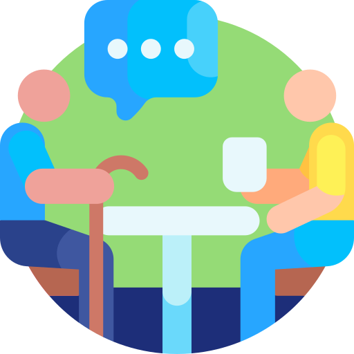
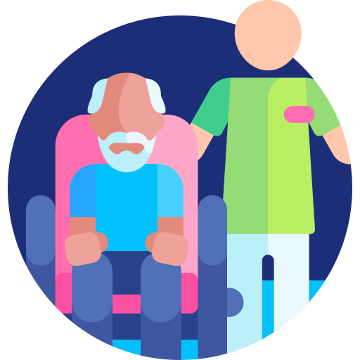
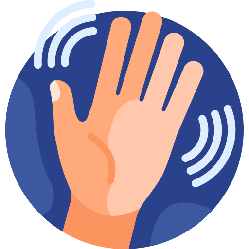

01
Besøksvenn
Tid til en god samtale.
En å dele historier med, lese avisen sammen med eller utfordre i et brettspill.
- Samtaler og selskap
- Spill og hyggelige aktiviteter
Litt hjelp i hverdagen.
Litt mer glede i livet.
Vi skaper rom for hyggelige samtaler, små opplevelser og praktisk hjelp — med tid til mennesket.

Noen ganger trenger man en hjelpende hånd. Andre ganger er det bare godt å ha noen å være sammen med.
Tid til en god samtale.
En å dele historier med, lese avisen sammen med eller utfordre i et brettspill.

Litt enklere å komme seg ut.
Selskap på handleturen, en tur i nabolaget eller på vei til en avtale.

En hjelpende hånd i hverdagen.
Praktisk hjelp med små oppgaver hjemme eller i hagen, etter nærmere avtale.
En god samtale. En tur ut. Et nytt minne.
Det er plass til mer av det som gjør hverdagen god.

Du trenger ikke ha alle svarene. Vi starter med å snakke om hva du ønsker.
Ring eller send en e-post om hva du ønsker hjelp eller selskap til.
Vi avklarer ønskene dine og diskuterer hva vi kan bidra med.
Tid, sted og aktivitet avtales sammen før et eventuelt besøk.
En opplevelse trenger ikke være stor for å bety mye. Her er noen ideer til noe vi kan gjøre sammen.
Kanskje en konsert eller et kafébesøk? Vi kan snakke om mulighetene sammen.
Finn på noe hyggelig
En liten tur i nabolaget, en pause på en benk og tid til en prat.
Spør om følge

Hei fra Eldrehjelperne!Vi er en ungdomsbedrift ved Nydalen videregående skole i Oslo. Utgangspunktet vårt er enkelt: Alle fortjener omsorg, selskap og glede i hverdagen, uansett alder.
Les om ossVi tilbyr sosialt selskap, følge og praktisk hjelp. Se tjenestene ovenfor, og kontakt oss for å avklare hva som er mulig for deg.
Ja, du kan ta kontakt for å diskutere hjelp eller selskap til en pårørende. Vi avklarer videre detaljer sammen.
Ring eller send en e-post. Tid, sted og innhold må avtales direkte. Et besøk er først avtalt når detaljene er bekreftet.
Kontakt oss for å avklare pris og hva avtalen omfatter før du bestemmer deg.
Tilbudet gjelder sosialt selskap og praktisk hjelp. Det erstatter ikke profesjonell helsehjelp eller medisinsk behandling.